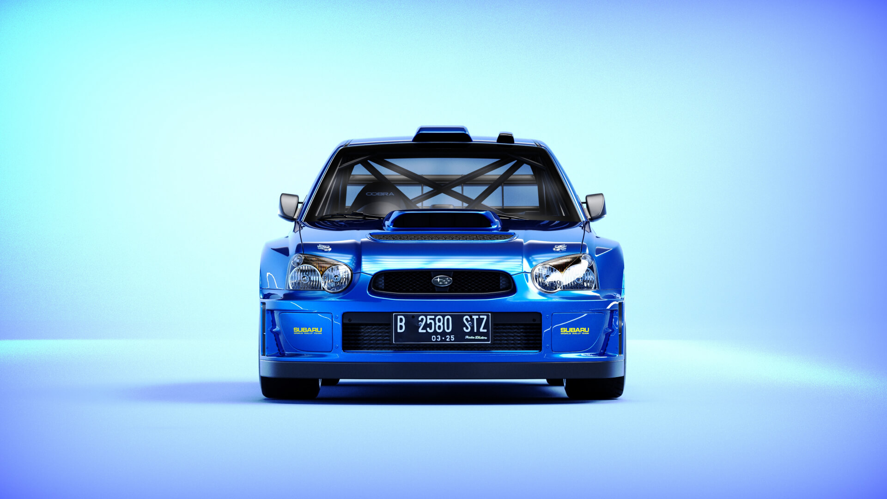
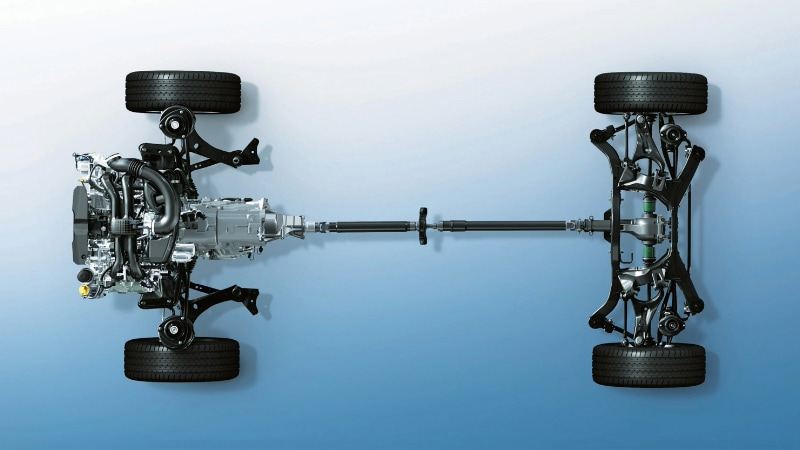
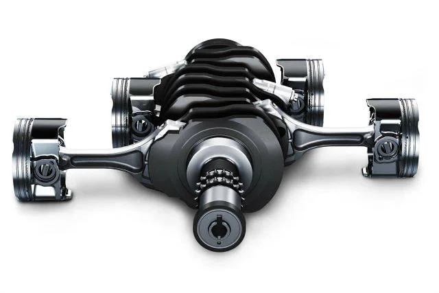
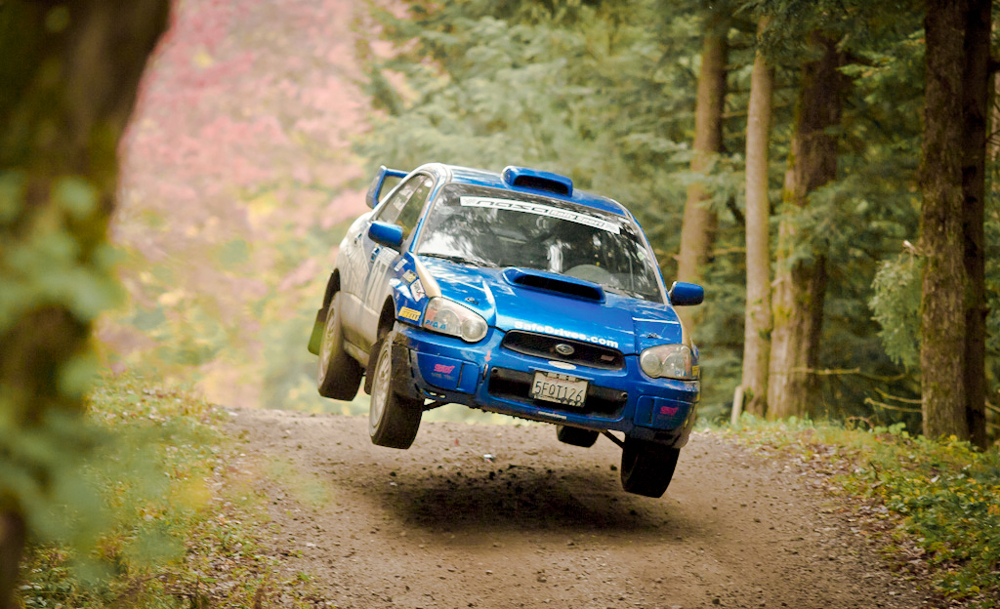

Specifications
The 2004 Subaru WRX STI is powered by a 2.5L turbochagred flat-four engine, typically called a "boxer" engine due to the opposing pistons. The engine produces 300 horsepower delivered through a manul 6 speed transmission. Equipped with a state-of-the-art AWD system the subaru WRX STI can handle high speeds and tight corners. with a 0-60 in just under 5 seconds this icon is a thrilling driving experience.
Specifications
AWD System
The 2004 WRX STI features a symmetrical AWD system that provides industry leading traction and stability in all driving conditions.
Boxer Engine
Eqipped with a 2.5L turbo chagred engine to be known for ots low centre of gravity this unique configuration not only delivers performance but also stability.
Rally Performance
Renowned for its rally performance, its sport tuned suspension, powerhouse engine and AWD system, the Subaru WRX STI is a favourtie amoung rally enthusiasts.